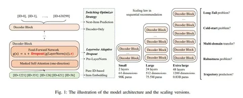

Законы масштабирования в больших моделях последовательных рекомендаций
Авторы из WeChat и Tencent разбирались, работают ли законы масштабирования нейросетей для рекомендательных систем. Главный вопрос — есть ли улучшение качества рекомендаций при увеличении количества обучаемых параметров? Короткий ответ — да.
Известно, что рост количества параметров моделей иногда коррелирует с улучшением качества решаемых задач. Больше всего работ посвящено законам масштабирования в языковых моделях. В них определяется эмпирическая зависимость функции потерь на отложенной выборке от характеристик обучения. Обычно рассматривают параметры энкодеров и/или декодеров. Для NLP зависимость в логарифмических координатах получается линейной.
В работе об SR авторы масштабировали декодер трансформера и вносили изменения в стратегии обучения, чтобы получить закон масштабирования для рекомендательных систем:
— Для слоёв в начале последовательности декодер-блоков применяли больший dropout-rate, а для слоёв на вершине — меньший, что позволило избежать оверфита.
— Сначала обучались с Adam до полной сходимости, а потом брали чекпоинты, с которых продолжали обучение при помощи SGD, потому что несмотря на лучшую сходимость, итоговый минимум у Adam получался хуже.
Историю взаимодействий форматировали как хронологическую последовательность ID айтемов. То есть задача решалась так же, как в случае с языковыми моделями. Исследователи не брали другую информацию (например, текст айтема), так как хотели изучить работу закона с т. з. поведения пользователя. Модели увеличивали до 0,8B параметров, сравнивая эффекты в разных диапазонах размеров.
Оказалось, закон масштабирования работает для SR-моделей даже в сценариях с ограниченным количеством данных. Авторы показали преимущество больших моделей и на сложных задачах рекомендаций: cold start, long tail, определяли траектории пользователей и смотрели, что происходит при мультидоменном трансфере — во всех случаях масштабирование улучшало результаты.
@RecSysChannel
Разбор подготовил❣ Артем Матвеев
Авторы из WeChat и Tencent разбирались, работают ли законы масштабирования нейросетей для рекомендательных систем. Главный вопрос — есть ли улучшение качества рекомендаций при увеличении количества обучаемых параметров? Короткий ответ — да.
Известно, что рост количества параметров моделей иногда коррелирует с улучшением качества решаемых задач. Больше всего работ посвящено законам масштабирования в языковых моделях. В них определяется эмпирическая зависимость функции потерь на отложенной выборке от характеристик обучения. Обычно рассматривают параметры энкодеров и/или декодеров. Для NLP зависимость в логарифмических координатах получается линейной.
В работе об SR авторы масштабировали декодер трансформера и вносили изменения в стратегии обучения, чтобы получить закон масштабирования для рекомендательных систем:
— Для слоёв в начале последовательности декодер-блоков применяли больший dropout-rate, а для слоёв на вершине — меньший, что позволило избежать оверфита.
— Сначала обучались с Adam до полной сходимости, а потом брали чекпоинты, с которых продолжали обучение при помощи SGD, потому что несмотря на лучшую сходимость, итоговый минимум у Adam получался хуже.
Историю взаимодействий форматировали как хронологическую последовательность ID айтемов. То есть задача решалась так же, как в случае с языковыми моделями. Исследователи не брали другую информацию (например, текст айтема), так как хотели изучить работу закона с т. з. поведения пользователя. Модели увеличивали до 0,8B параметров, сравнивая эффекты в разных диапазонах размеров.
Оказалось, закон масштабирования работает для SR-моделей даже в сценариях с ограниченным количеством данных. Авторы показали преимущество больших моделей и на сложных задачах рекомендаций: cold start, long tail, определяли траектории пользователей и смотрели, что происходит при мультидоменном трансфере — во всех случаях масштабирование улучшало результаты.
@RecSysChannel
Разбор подготовил

11 313 просмотров · 18 реакций
Открыть в Telegram · Открыть пост на сайте